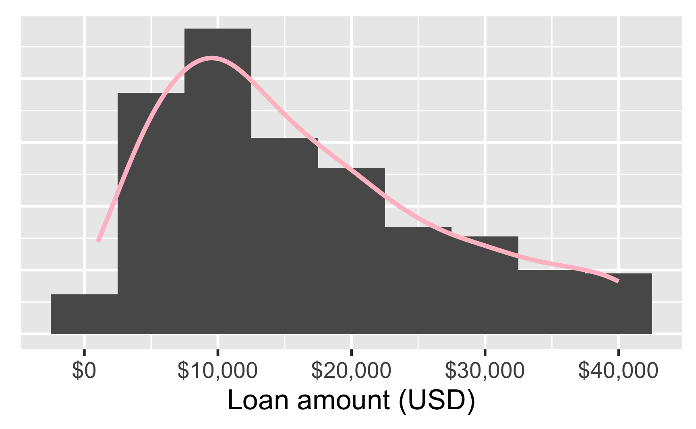
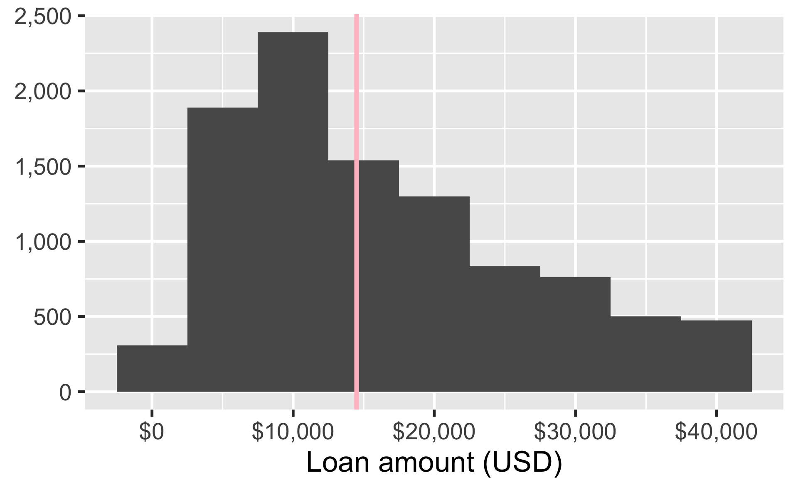
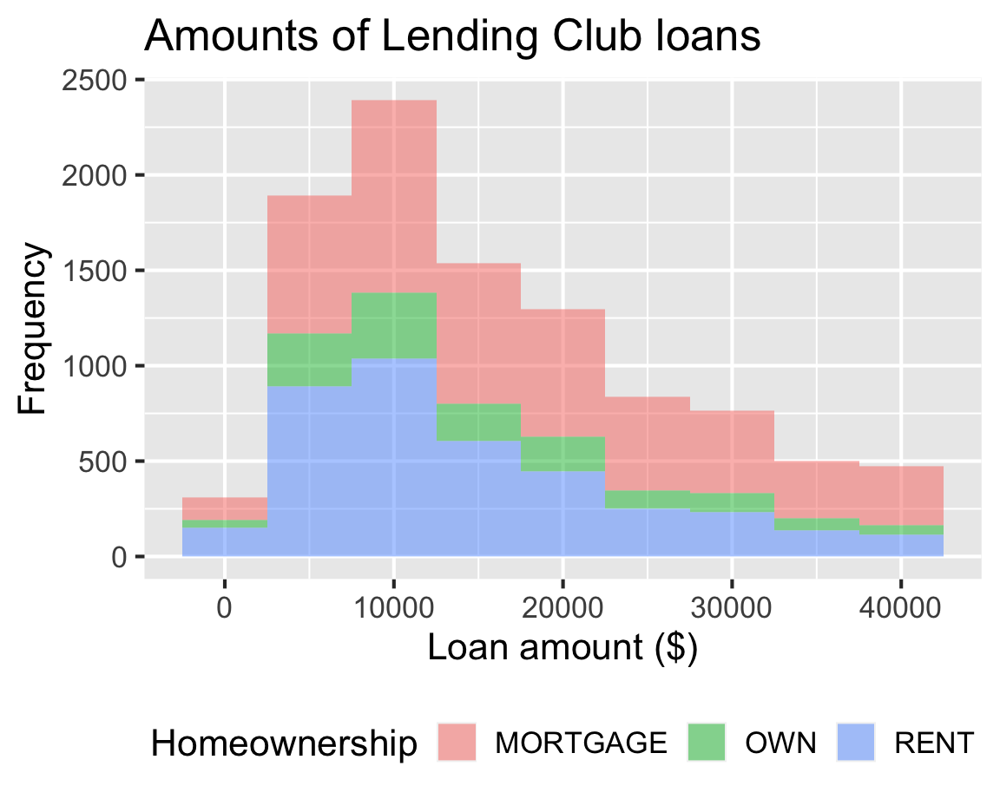
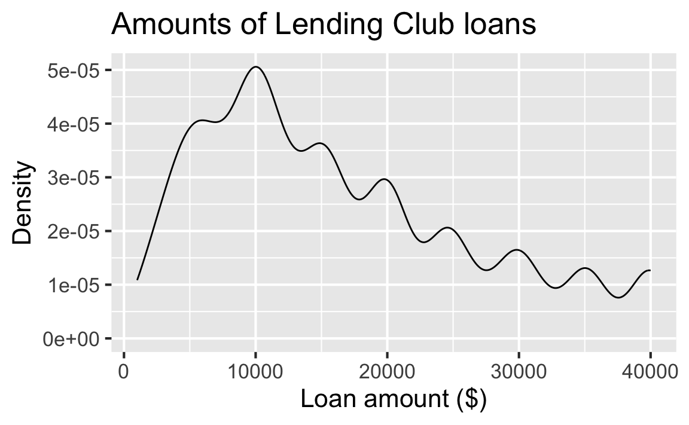
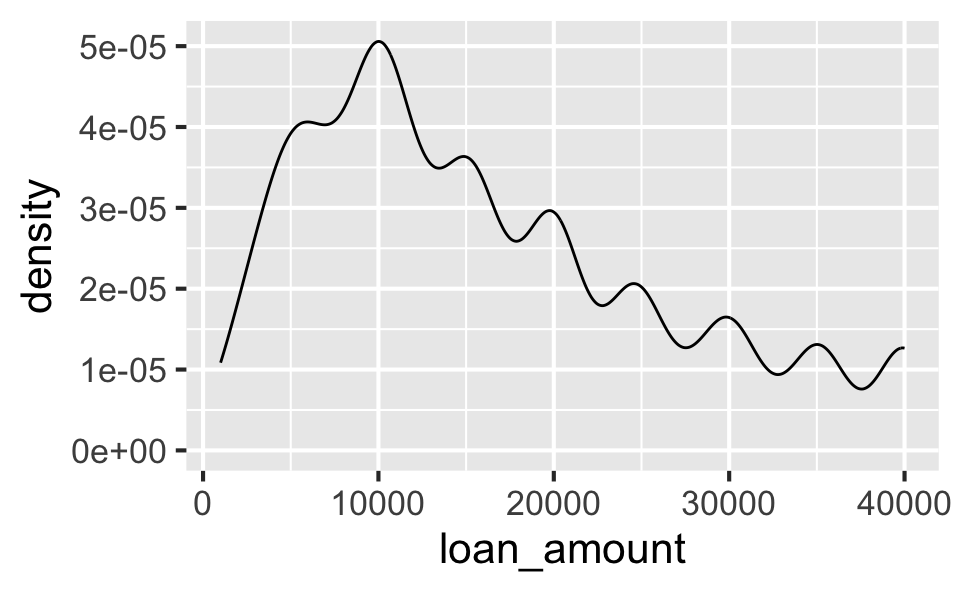
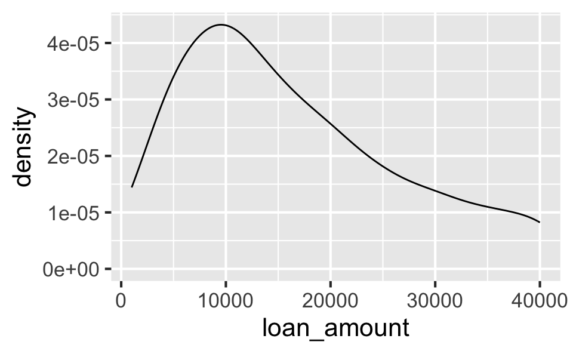
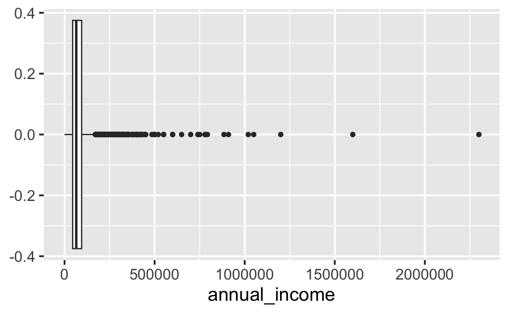

library(tidyverse) # for data wrangling and visualization
library(openintro) # for data
library(scales) # for pretty axis labelsVisualizing and summarizing numerical data
Data visualization and transformation
Setup
Packages
Data: Lending Club
loans <- loans_full_schema |>
select(
loan_amount, interest_rate, term, grade,
state, annual_income, homeownership, debt_to_income
)
glimpse(loans)Rows: 10,000
Columns: 8
$ loan_amount <int> 28000, 5000, 2000, 21600, 23000, 50…
$ interest_rate <dbl> 14.07, 12.61, 17.09, 6.72, 14.07, 6…
$ term <dbl> 60, 36, 36, 36, 36, 36, 60, 60, 36,…
$ grade <fct> C, C, D, A, C, A, C, B, C, A, C, B,…
$ state <fct> NJ, HI, WI, PA, CA, KY, MI, AZ, NV,…
$ annual_income <dbl> 90000, 40000, 40000, 30000, 35000, …
$ homeownership <fct> MORTGAGE, RENT, RENT, RENT, RENT, O…
$ debt_to_income <dbl> 18.01, 5.04, 21.15, 10.16, 57.96, 6…Distribution of a numerical variable
Loan amount

Characteristics of a distribution
- Shape: Modality and skewness
- Center: Generally mean or median depending on whether the distribution is symmetric or skewed, respectively
- Spread: Generally standard deviation or inter-quartile range (IQR) depending on whether the distribution is symmetric or skewed, respectively
- Outliers: Whether there are any, where they are located, and if feasible to identify, which observations
Shape
The distribution of loan amounts in this sample is unimodal and right-skewed distribution.

Center
Median loan amount in this sample is $14,500.

Spread
In this sample, the middle 50% of the loan amounts are between $8,000 and $24,000.

Outliers
There are no clear outliers in the loan amounts in this sample.

Visualizing numerical data
Histogram
- Helpful for identifying shape (modality and skewness)
- Requires a careful selection of binwidth
ggplot(loans, aes(x = loan_amount)) +
geom_histogram()`stat_bin()` using `bins = 30`. Pick better value with
`binwidth`.
Histograms and binwidth
p_loans <- ggplot(loans, aes(x = loan_amount))p_loans +
geom_histogram(
binwidth = 1000
)
p_loans +
geom_histogram(
binwidth = 5000
)
p_loans +
geom_histogram(
binwidth = 20000
)
Histogram customization
Density plot
- Helpful for identifying shape (modality and skewness)
- Smoothness can be
adjusted
p_loans+
geom_density()
p_loans +
geom_density(adjust = 2)
Box plot
- Helpful for identifying min, max, 25th percentile, median (50th percentile), 75th percentile
- Helpful for identifying shape (skewness, but not modality)
- Makes outliers very clear (according to a strict definition of an outlier)
p_loans +
geom_boxplot()
Box plot and outliers
ggplot(loans, aes(x = interest_rate)) +
geom_boxplot()
Box plot customization

Summarizing numerical data
summarize()
summarize()returns for a summary statistic for all observations in the data:
loans |>
summarize(mean_loan_amt = mean(loan_amount))# A tibble: 1 × 1
mean_loan_amt
<dbl>
1 16362.. . .
summarize()can be used to calculate multiple summary statistics as well:
loans |>
summarize(
q25 = quantile(loan_amount, 0.25),
q75 = quantile(loan_amount, 0.75)
)# A tibble: 1 × 2
q25 q75
<dbl> <dbl>
1 8000 24000Sloppy summarize()
summarize() will work even if you don’t name your summary statistic, or give it a non-informative/bad name, but I don’t recommend it!